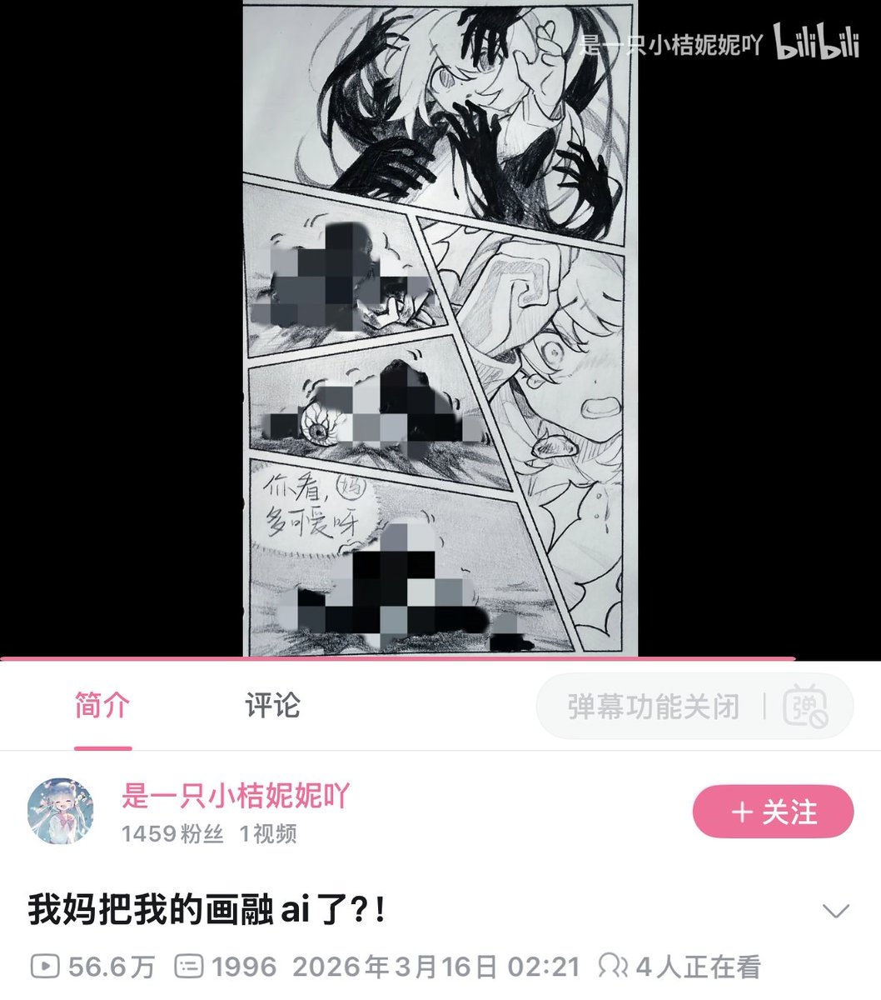

サイバー環状線
@CyberKanjousen
你是一个妈妈，你知道你的女儿有画自己的 OC，为了拉近和女儿的关系，你用豆包生成了三张你女儿的 OC 然后发给你的女儿。接下来你的女儿会：
A. 理解并接受妈妈的做法；
B. 不认同 AI 生图，于是向妈妈说明版权和对 AI 的看法；
C. 大吵大闹，把妈妈挂在网上，说自己的 OC 被 AI 玷污了，要求妈妈赔钱 ，还要把自己的 OC 画成尸块以控诉母亲的「暴行」。
（漫画看起来也有可能是直接把母亲画成了尸块……？没太看明白说实话
